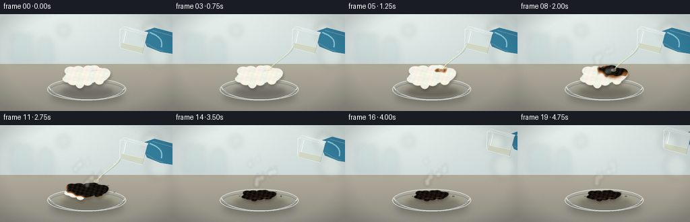
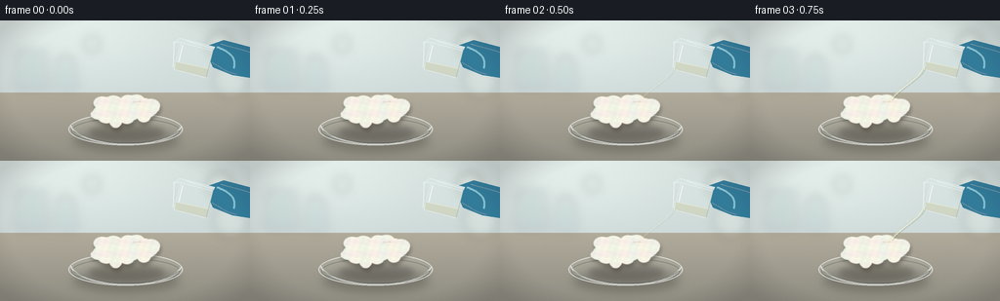

CODING AGENTS AS PIXEL WORLD MODELS
traex/GPT-5.6-Sol · phygen_154
点击播放 · 原生 RGB 像素
逐轮保存的候选
回放视频、检查图与代码变化。
每份候选均可单独播放。实际图片检查记录在下方工具轨迹中。
候选 01播放与检查图
点击播放 · 原生 RGB 像素
展开代码变化
--- 上一保存版本
+++ 本次保存版本
@@ -0,0 +1,246 @@
+from pathlib import Path
+import math
+import numpy as np
+from PIL import Image, ImageDraw, ImageFilter
+import artifact_io
+
+W,H,N,S = 256,144,20,3
+WW,HH=W*S,H*S
+rng=np.random.default_rng(154)
+
+def sc(v): return int(round(v*S))
+def pts(seq): return [(sc(x),sc(y)) for x,y in seq]
+def ellipse(d, box, **kw): d.ellipse(tuple(sc(x) for x in box), **kw)
+def line(d, xy, **kw):
+ if 'width' in kw: kw['width']=sc(kw['width'])
+ d.line(pts(xy), **kw)
+def poly(d, xy, **kw): d.polygon(pts(xy), **kw)
+def smooth(a,b,x):
+ x=np.clip((x-a)/(b-a),0,1); return x*x*(3-2*x)
+
+def blurred_ellipse(base, box, color, blur):
+ lay=Image.new('RGBA',(WW,HH),(0,0,0,0)); d=ImageDraw.Draw(lay)
+ ellipse(d,box,fill=color)
+ base.alpha_composite(lay.filter(ImageFilter.GaussianBlur(sc(blur))))
+
+def bezier(draw, p0,p1,p2,p3,fill,width):
+ p=[]
+ for u in np.linspace(0,1,40):
+ v=1-u
+ x=v**3*p0[0]+3*v*v*u*p1[0]+3*v*u*u*p2[0]+u**3*p3[0]
+ y=v**3*p0[1]+3*v*v*u*p1[1]+3*v*u*u*p2[1]+u**3*p3[1]
+ p.append((x,y))
+ line(draw,p,fill=fill,width=width,joint='curve')
+
+# Fixed cotton lobe seeds, fibers, and vessel bubbles
+lobes=[]
+for i in range(42):
+ ang=rng.uniform(0,2*np.pi); rad=np.sqrt(rng.uniform())
+ lobes.append((rad*30*np.cos(ang),rad*12*np.sin(ang),rng.uniform(5,10),rng.uniform(4,8)))
+fibers=[]
+for i in range(100):
+ ang=rng.uniform(0,2*np.pi); rr=np.sqrt(rng.uniform())
+ x=128+rr*31*np.cos(ang); y=91+rr*14*np.sin(ang)
+ fibers.append((x,y,rng.uniform(1,4),rng.uniform(-1.5,1.5),rng.uniform(.25,.8)))
+pores=[]
+for i in range(70):
+ pores.append((rng.normal(0,17),rng.normal(0,6),rng.uniform(.4,1.7),rng.uniform(.25,1.0)))
+
+frames=[]
+for fi in range(N):
+ t=fi/(N-1)
+ # photographic cool laboratory background + warm work surface
+ yy=np.arange(HH)[:,None]/S
+ xx=np.arange(WW)[None,:]/S
+ rgb=np.zeros((HH,WW,3),dtype=np.float32)
+ # wall
+ wall=np.array([205,216,215.],dtype=float)
+ rgb[:]=wall
+ rgb += (xx[...,None]-128)*np.array([.015,.022,.018])
+ rgb += (yy[...,None]-55)*np.array([-.10,-.08,-.055])
+ # broad soft overhead glow
+ glow=np.exp(-((xx-75)**2/(2*75**2)+(yy-16)**2/(2*42**2)))[:,:,None]
+ rgb += glow*np.array([18,19,17])
+ # bench starts y=74
+ bench=np.broadcast_to(yy>=74,(HH,WW))
+ by=np.broadcast_to(yy,(HH,WW))
+ benchcol=np.stack([177-(by-74)*.48,171-(by-74)*.42,155-(by-74)*.34],axis=-1)
+ rgb[bench]=benchcol[bench]
+ # subtle grain
+ nr=np.random.default_rng(700+fi).normal(0,1.15,(HH,WW,1))
+ rgb=np.clip(rgb+nr,0,255).astype(np.uint8)
+ im=Image.fromarray(rgb,'RGB').convert('RGBA')
+
+ # softly defocused background laboratory glassware
+ bg=Image.new('RGBA',(WW,HH),(0,0,0,0)); d=ImageDraw.Draw(bg)
+ # bottle left
+ ellipse(d,(14,30,49,37),fill=(90,127,125,35)); poly(d,[(17,34),(46,34),(51,71),(13,71)],fill=(102,145,143,28))
+ line(d,[(15,67),(49,67)],fill=(250,255,250,70),width=1)
+ # distant bottle and bokeh
+ poly(d,[(57,42),(77,42),(80,73),(55,73)],fill=(108,160,161,25))
+ ellipse(d,(61,36,73,45),fill=(238,248,243,50))
+ for x,y,r,a in [(225,25,13,60),(236,61,18,35),(94,24,8,45)]: ellipse(d,(x-r,y-r,x+r,y+r),fill=(248,252,239,a))
+ bg=bg.filter(ImageFilter.GaussianBlur(sc(5)))
+ im.alpha_composite(bg)
+
+ # contact shadows on bench
+ blurred_ellipse(im,(75,111,183,133),(48,42,33,80),5)
+ blurred_ellipse(im,(91,106,168,123),(32,28,23,72),3)
+
+ # Petri dish, behind sample
+ dish=Image.new('RGBA',(WW,HH),(0,0,0,0)); d=ImageDraw.Draw(dish)
+ ellipse(d,(70,95,187,128),fill=(225,235,228,26),outline=(245,250,246,180),width=sc(1))
+ ellipse(d,(73,100,184,126),outline=(94,112,107,115),width=sc(1))
+ # acid liquid sheen in dish appears after pour
+ wet=smooth(.20,.66,t)
+ if wet>0:
+ ellipse(d,(82,102,177,122),fill=(205,199,161,int(22+28*wet)))
+ bezier(d,(83,113),(107,121),(157,120),(178,111),(247,250,227,int(45*wet)),.65)
+ # front thick glass rim
+ bezier(d,(72,108),(84,132),(174,134),(186,108),(247,252,248,165),1.25)
+ bezier(d,(75,113),(100,129),(160,131),(183,113),(68,81,77,105),.75)
+ # speculars
+ bezier(d,(82,119),(96,124),(107,126),(119,126),(255,255,255,145),.75)
+ bezier(d,(158,125),(169,123),(177,119),(181,115),(255,255,255,105),.55)
+ im.alpha_composite(dish)
+
+ # Cotton shape and chemical state
+ q=smooth(.15,.82,t) # reaction progression
+ # slight early swelling then pronounced collapse
+ scale_x=1+0.045*math.sin(min(q,0.35)/.35*math.pi) - .28*smooth(.55,1,q)
+ scale_y=1+0.08*math.sin(min(q,0.32)/.32*math.pi) - .52*smooth(.42,1,q)
+ cy=91 + 13*smooth(.45,1,q)
+ cottonmask=Image.new('L',(WW,HH),0); md=ImageDraw.Draw(cottonmask)
+ for ox,oy,rx,ry in lobes:
+ x=128+ox*scale_x; y=cy+oy*scale_y
+ ellipse(md,(x-rx*scale_x,y-ry*scale_y,x+rx*scale_x,y+ry*scale_y),fill=255)
+ cottonmask=cottonmask.filter(ImageFilter.GaussianBlur(sc(.45)))
+
+ # chemistry coloration map: initial impact at (143,82), spreads outward irregularly
+ Y,X=np.mgrid[0:HH,0:WW]; XL=X/S; YL=Y/S
+ # normalize distance in current sample coords
+ impactx=143-6*smooth(.35,1,q); impacty=83+12*smooth(.38,1,q)
+ dist=np.sqrt(((XL-impactx)/37)**2+((YL-impacty)/16)**2)
+ wav=.055*np.sin(XL*.43+YL*.15)+.04*np.sin(XL*.17-YL*.55)
+ front=q*1.62 - dist + wav
+ reacted=smooth(-.18,.18,front)
+ # central contact chars earlier
+ hot=np.exp(-((XL-143)**2/120+(YL-(84+7*q))**2/55))*smooth(.12,.4,q)
+ reacted=np.maximum(reacted,hot)
+ # palette interpolation white -> caramel -> deep carbon
+ white=np.stack([244+5*np.sin(XL*.31),242+4*np.sin(YL*.51),230+2*np.sin(XL*.2)],axis=-1)
+ tan=np.array([145.,83.,35.]); black=np.array([19.,16.,13.])
+ brownstage=smooth(.02,.50,reacted)[...,None]
+ charstage=smooth(.48,.93,reacted)[...,None]
+ col=white*(1-brownstage)+tan*brownstage
+ col=col*(1-charstage)+black*charstage
+ # craggy mottling
+ mott=(7*np.sin(XL*.9+YL*.33)+5*np.sin(XL*.32-YL*1.27))[...,None]
+ col=np.clip(col + mott*(.25+.75*reacted[...,None]),0,255).astype(np.uint8)
+ ca=np.array(cottonmask)
+ cotton=Image.fromarray(np.dstack([col,ca]),'RGBA')
+ # physical lifted shadow
+ sh=Image.new('RGBA',(WW,HH),(0,0,0,0)); sh.putalpha(cottonmask.filter(ImageFilter.GaussianBlur(sc(2))))
+ sha=np.array(sh); sha[:,:,:3]=np.array([35,27,20]); sha[:,:,3]=(sha[:,:,3]*.35).astype(np.uint8)
+ im.alpha_composite(Image.fromarray(sha),dest=(sc(1),sc(3)))
+ im.alpha_composite(cotton)
+
+ # cotton wispy fibers (fade/burn away locally)
+ detail=Image.new('RGBA',(WW,HH),(0,0,0,0)); d=ImageDraw.Draw(detail)
+ for j,(x0,y0,ln,dy,ph) in enumerate(fibers):
+ # map with deformation
+ x=128+(x0-128)*scale_x; y=cy+(y0-91)*scale_y
+ localdist=math.sqrt(((x-impactx)/37)**2+((y-impacty)/16)**2)
+ react=np.clip((q*1.62-localdist+.08)/.3,0,1)
+ if react<.82:
+ a=int(90*(1-react))
+ line(d,[(x-ln/2,y),(x,y+dy),(x+ln/2,y-.4)],fill=(255,253,242,a),width=.45)
+ # caramel filaments and black pores
+ if q>.15:
+ for j,(ox,oy,r,alpha) in enumerate(pores):
+ x=128+ox*scale_x; y=cy+oy*scale_y
+ localdist=math.sqrt(((x-impactx)/37)**2+((y-impacty)/16)**2)
+ react=np.clip((q*1.62-localdist+.07)/.25,0,1)
+ if react>.15:
+ rr=r*(.5+react)
+ ellipse(d,(x-rr,y-rr*.55,x+rr,y+rr*.55),fill=(6,5,4,int(125*alpha*react)),outline=(85,47,19,int(80*react)))
+ # glossy tar highlights on late char
+ if q>.55:
+ for x,y,rx in [(123,101,6),(143,99,4),(110,104,3),(151,105,5)]:
+ x=128+(x-128)*scale_x; y=cy+(y-91)*scale_y
+ bezier(d,(x-rx,y),(x-1,y-1.2),(x+2,y-.8),(x+rx,y),(128,101,76,int(110*(q-.55)/.45)),.55)
+ im.alpha_composite(detail)
+
+ # Pouring stream: present after initial beat, tapering off by frame 13
+ pour=smooth(.07,.18,t)*(1-smooth(.60,.73,t))
+ if pour>0.01:
+ stream=Image.new('RGBA',(WW,HH),(0,0,0,0)); d=ImageDraw.Draw(stream)
+ sway=.8*math.sin(fi*.8)
+ # translucent core and luminous edges, curved toward sample
+ bezier(d,(178,48),(174,61),(151+sway,67),(143,84),(205,213,180,int(118*pour)),2.8)
+ bezier(d,(177.3,48),(173,61),(150+sway,70),(142.3,84),(255,255,231,int(180*pour)),.7)
+ bezier(d,(179.4,49),(175,62),(153+sway,69),(144.5,84),(111,121,99,int(95*pour)),.55)
+ # splash droplets
+ for k in range(4):
+ phase=t*17+k*1.7
+ u=(phase%1)
+ x=175*(1-u)+144*u + math.sin(k*4.2)*2
+ y=51*(1-u)+83*u + 7*u*(u-1)
+ ellipse(d,(x-.45,y-.8,x+.45,y+.8),fill=(246,248,222,int(145*pour)))
+ # tiny contact crown/glint
+ ellipse(d,(139,81,146,85),fill=(239,233,195,int(95*pour)),outline=(255,255,238,int(160*pour)))
+ im.alpha_composite(stream)
+
+ # Small tilted pouring beaker, recedes after pour, with gloved hand
+ exitp=smooth(.67,.90,t)
+ dx=exitp*39; dy=-exitp*15
+ vessel=Image.new('RGBA',(WW,HH),(0,0,0,0)); d=ImageDraw.Draw(vessel)
+ # glove from right edge
+ poly(d,[(209+dx,27+dy),(229+dx,20+dy),(263+dx,29+dy),(264+dx,60+dy),(238+dx,56+dy),(218+dx,48+dy)],fill=(44,119,151,245))
+ # glove folds and fingers
+ bezier(d,(222+dx,27+dy),(236+dx,32+dy),(242+dx,39+dy),(239+dx,49+dy),(105,183,204,180),2)
+ bezier(d,(226+dx,24+dy),(236+dx,27+dy),(249+dx,30+dy),(257+dx,33+dy),(24,82,115,130),1)
+ bezier(d,(217+dx,43+dy),(225+dx,47+dy),(231+dx,53+dy),(242+dx,55+dy),(17,76,109,135),1)
+ # glass body, tilted left
+ poly(d,[(186+dx,20+dy),(218+dx,29+dy),(211+dx,59+dy),(178+dx,50+dy)],fill=(222,238,235,48),outline=(245,252,249,205))
+ # acid fill inside lower half
+ poly(d,[(180+dx,42+dy),(213+dx,49+dy),(211+dx,58+dy),(179+dx,50+dy)],fill=(205,201,153,90))
+ line(d,[(180+dx,42+dy),(213+dx,49+dy)],fill=(255,252,213,170),width=.7)
+ # rim and spout
+ poly(d,[(184+dx,18+dy),(220+dx,27+dy),(218+dx,31+dy),(183+dx,22+dy),(177+dx,23+dy)],fill=(218,237,235,75),outline=(249,255,252,220))
+ line(d,[(178+dx,23+dy),(177+dx,48+dy)],fill=(248,255,252,190),width=.8)
+ line(d,[(218+dx,30+dy),(211+dx,58+dy)],fill=(103,135,135,100),width=.65)
+ # highlights
+ line(d,[(187+dx,25+dy),(183+dx,42+dy)],fill=(255,255,255,195),width=.85)
+ bezier(d,(191+dx,21+dy),(200+dx,23+dy),(211+dx,27+dy),(217+dx,28+dy),(255,255,255,185),.7)
+ im.alpha_composite(vessel)
+
+ # steam/acid mist after contact, increasingly vigorous then dissipating
+ steam_strength=smooth(.22,.47,t)*(1-.3*smooth(.82,1,t))
+ if steam_strength>0:
+ mist=Image.new('RGBA',(WW,HH),(0,0,0,0)); d=ImageDraw.Draw(mist)
+ for k in range(7):
+ phase=fi*.20+k*.61
+ x0=119+k*4.1 + 2.8*math.sin(phase*2.2)
+ y0=91-2*(k%2)
+ rise=(fi*2.3+k*4.7)%39
+ x=x0+5*math.sin(phase+rise*.08); y=y0-rise
+ a=int(38*steam_strength*(1-rise/45))
+ if a>1:
+ # layered translucent vapor puff
+ ellipse(d,(x-3.8,y-5,x+4.5,y+4),fill=(245,247,239,a))
+ bezier(d,(x,y+4),(x-4,y),(x+5,y-6),(x+1,y-10),(250,252,246,a),1.4)
+ mist=mist.filter(ImageFilter.GaussianBlur(sc(2.3)))
+ im.alpha_composite(mist)
+
+ # foreground glass rim sparkle, cinematic vignette
+ ov=np.zeros((HH,WW,4),dtype=np.uint8)
+ rr=((xx-128)/155)**2+((yy-72)/100)**2
+ ov[:,:,3]=np.clip((rr-.55)*65,0,32).astype(np.uint8)
+ im.alpha_composite(Image.fromarray(ov,'RGBA'))
+
+ out=im.convert('RGB').resize((W,H),Image.Resampling.LANCZOS)
+ frames.append(np.array(out,dtype=np.uint8))
+
+frames=np.stack(frames)
+artifact_io.save(frames,Path(__file__).resolve().parent)
候选 02播放与检查图
点击播放 · 原生 RGB 像素


展开代码变化
--- 上一保存版本
+++ 本次保存版本
@@ -225,12 +225,12 @@
y0=91-2*(k%2)
rise=(fi*2.3+k*4.7)%39
x=x0+5*math.sin(phase+rise*.08); y=y0-rise
- a=int(38*steam_strength*(1-rise/45))
+ a=int(82*steam_strength*(1-rise/45))
if a>1:
# layered translucent vapor puff
ellipse(d,(x-3.8,y-5,x+4.5,y+4),fill=(245,247,239,a))
bezier(d,(x,y+4),(x-4,y),(x+5,y-6),(x+1,y-10),(250,252,246,a),1.4)
- mist=mist.filter(ImageFilter.GaussianBlur(sc(2.3)))
+ mist=mist.filter(ImageFilter.GaussianBlur(sc(1.8)))
im.alpha_composite(mist)
# foreground glass rim sparkle, cinematic vignette
可观测工具轨迹
实际执行的命令与返回图片。
命令 1exit 0
/bin/bash -lc "cat prompt.txt && printf '\\n---RULES---\\n' && cat GENERATION_RULES.md && printf '\\n---SPEC---\\n' && cat task_spec.json"
命令 2exit 0
/bin/bash -lc "find . -maxdepth 2 -type f -printf '%p %s bytes\\n' | sort"
命令 3exit 0
/bin/bash -lc 'cat artifact_io.py'
命令 4exit 1
/bin/bash -lc "cat > generate.py <<'PY'
from pathlib import Path
import math
import numpy as np
from PIL import Image, ImageDraw, ImageFilter
import artifact_io
W,H,N,S = 256,144,20,3
WW,HH=W*S,H*S
rng=np.random.default_rng(154)
def sc(v): return int(round(v*S))
def pts(seq): return [(sc(x),sc(y)) for x,y in seq]
def ellipse(d, box, **kw): d.ellipse(tuple(sc(x) for x in box), **kw)
def line(d, xy, **kw):
if 'width' in kw: kw['width']=sc(kw['width'])
d.line(pts(xy), **kw)
def poly(d, xy, **kw): d.polygon(pts(xy), **kw)
def smooth(a,b,x):
x=np.clip((x-a)/(b-a),0,1); return x*x*(3-2*x)
def blurred_ellipse(base, box, color, blur):
lay=Image.new('RGBA',(WW,HH),(0,0,0,0)); d=ImageDraw.Draw(lay)
ellipse(d,box,fill=color)
base.alpha_composite(lay.filter(ImageFilter.GaussianBlur(sc(blur))))
def bezier(draw, p0,p1,p2,p3,fill,width):
p=[]
for u in np.linspace(0,1,40):
v=1-u
x=v**3*p0[0]+3*v*v*u*p1[0]+3*v*u*u*p2[0]+u**3*p3[0]
y=v**3*p0[1]+3*v*v*u*p1[1]+3*v*u*u*p2[1]+u**3*p3[1]
p.append((x,y))
line(draw,p,fill=fill,width=width,joint='curve')
# Fixed cotton lobe seeds, fibers, and vessel bubbles
lobes=[]
for i in range(42):
ang=rng.uniform(0,2*np.pi); rad=np.sqrt(rng.uniform())
lobes.append((rad*30*np.cos(ang),rad*12*np.sin(ang),rng.uniform(5,10),rng.uniform(4,8)))
fibers=[]
for i in range(100):
ang=rng.uniform(0,2*np.pi); rr=np.sqrt(rng.uniform())
x=128+rr*31*np.cos(ang); y=91+rr*14*np.sin(ang)
fibers.append((x,y,rng.uniform(1,4),rng.uniform(-1.5,1.5),rng.uniform(.25,.8)))
pores=[]
for i in range(70):
pores.append((rng.normal(0,17),rng.normal(0,6),rng.uniform(.4,1.7),rng.uniform(.25,1.0)))
frames=[]
for fi in range(N):
t=fi/(N-1)
# photographic cool laboratory background + warm work surface
yy=np.arange(HH)[:,None]/S
xx=np.arange(WW)[None,:]/S
rgb=np.zeros((HH,WW,3),dtype=np.float32)
# wall
wall=np.array([205,216,215.],dtype=float)
rgb[:]=wall
rgb += (xx[...,None]-128)*np.array([.015,.022,.018])
rgb += (yy[...,None]-55)*np.array([-.10,-.08,-.055])
# broad soft overhead glow
glow=np.exp(-((xx-75)**2/(2*75**2)+(yy-16)**2/(2*42**2)))[:,:,None]
rgb += glow*np.array([18,19,17])
# bench starts y=74
bench=yy>=74
by=np.broadcast_to(yy,(HH,WW))
benchcol=np.stack([177-(by-74)*.48,171-(by-74)*.42,155-(by-74)*.34],axis=-1)
rgb[bench]=benchcol[bench]
# subtle grain
nr=np.random.default_rng(700+fi).normal(0,1.15,(HH,WW,1))
rgb=np.clip(rgb+nr,0,255).astype(np.uint8)
im=Image.fromarray(rgb,'RGB').convert('RGBA')
# softly defocused background laboratory glassware
bg=Image.new('RGBA',(WW,HH),(0,0,0,0)); d=ImageDraw.Draw(bg)
# bottle left
ellipse(d,(14,30,49,37),fill=(90,127,125,35)); poly(d,[(17,34),(46,34),(51,71),(13,71)],fill=(102,145,143,28))
line(d,[(15,67),(49,67)],fill=(250,255,250,70),width=1)
# distant bottle and bokeh
poly(d,[(57,42),(77,42),(80,73),(55,73)],fill=(108,160,161,25))
ellipse(d,(61,36,73,45),fill=(238,248,243,50))
for x,y,r,a in [(225,25,13,60),(236,61,18,35),(94,24,8,45)]: ellipse(d,(x-r,y-r,x+r,y+r),fill=(248,252,239,a))
bg=bg.filter(ImageFilter.GaussianBlur(sc(5)))
im.alpha_composite(bg)
# contact shadows on bench
blurred_ellipse(im,(75,111,183,133),(48,42,33,80),5)
blurred_ellipse(im,(91,106,168,123),(32,28,23,72),3)
# Petri dish, behind sample
dish=Image.new('RGBA',(WW,HH),(0,0,0,0)); d=ImageDraw.Draw(dish)
ellipse(d,(70,95,187,128),fill=(225,235,228,26),outline=(245,250,246,180),width=sc(1))
ellipse(d,(73,100,184,126),outline=(94,112,107,115),width=sc(1))
# acid liquid sheen in dish appears after pour
wet=smooth(.20,.66,t)
if wet>0:
ellipse(d,(82,102,177,122),fill=(205,199,161,int(22+28*wet)))
bezier(d,(83,113),(107,121),(157,120),(178,111),(247,250,227,int(45*wet)),.65)
# front thick glass rim
bezier(d,(72,108),(84,132),(174,134),(186,108),(247,252,248,165),1.25)
bezier(d,(75,113),(100,129),(160,131),(183,113),(68,81,77,105),.75)
# speculars
bezier(d,(82,119),(96,124),(107,126),(119,126),(255,255,255,145),.75)
bezier(d,(158,125),(169,123),(177,119),(181,115),(255,255,255,105),.55)
im.alpha_composite(dish)
# Cotton shape and chemical state
q=smooth(.15,.82,t) # reaction progression
# slight early swelling then pronounced collapse
scale_x=1+0.045*math.sin(min(q,0.35)/.35*math.pi) - .28*smooth(.55,1,q)
scale_y=1+0.08*math.sin(min(q,0.32)/.32*math.pi) - .52*smooth(.42,1,q)
cy=91 + 13*smooth(.45,1,q)
cottonmask=Image.new('L',(WW,HH),0); md=ImageDraw.Draw(cottonmask)
for ox,oy,rx,ry in lobes:
x=128+ox*scale_x; y=cy+oy*scale_y
ellipse(md,(x-rx*scale_x,y-ry*scale_y,x+rx*scale_x,y+ry*scale_y),fill=255)
cottonmask=cottonmask.filter(ImageFilter.GaussianBlur(sc(.45)))
# chemistry coloration map: initial impact at (143,82), spreads outward irregularly
Y,X=np.mgrid[0:HH,0:WW]; XL=X/S; YL=Y/S
# normalize distance in current sample coords
impactx=143-6*smooth(.35,1,q); impacty=83+12*smooth(.38,1,q)
dist=np.sqrt(((XL-impactx)/37)**2+((YL-impacty)/16)**2)
wav=.055*np.sin(XL*.43+YL*.15)+.04*np.sin(XL*.17-YL*.55)
front=q*1.62 - dist + wav
reacted=smooth(-.18,.18,front)
# central contact chars earlier
hot=np.exp(-((XL-143)**2/120+(YL-(84+7*q))**2/55))*smooth(.12,.4,q)
reacted=np.maximum(reacted,hot)
# palette interpolation white -> caramel -> deep carbon
white=np.stack([244+5*np.sin(XL*.31),242+4*np.sin(YL*.51),230+2*np.sin(XL*.2)],axis=-1)
tan=np.array([145.,83.,35.]); black=np.array([19.,16.,13.])
brownstage=smooth(.02,.50,reacted)[...,None]
charstage=smooth(.48,.93,reacted)[...,None]
col=white*(1-brownstage)+tan*brownstage
col=col*(1-charstage)+black*charstage
# craggy mottling
mott=(7*np.sin(XL*.9+YL*.33)+5*np.sin(XL*.32-YL*1.27))[...,None]
col=np.clip(col + mott*(.25+.75*reacted[...,None]),0,255).astype(np.uint8)
ca=np.array(cottonmask)
cotton=Image.fromarray(np.dstack([col,ca]),'RGBA')
# physical lifted shadow
sh=Image.new('RGBA',(WW,HH),(0,0,0,0)); sh.putalpha(cottonmask.filter(ImageFilter.GaussianBlur(sc(2))))
sha=np.array(sh); sha[:,:,:3]=np.array([35,27,20]); sha[:,:,3]=(sha[:,:,3]*.35).astype(np.uint8)
im.alpha_composite(Image.fromarray(sha),dest=(sc(1),sc(3)))
im.alpha_composite(cotton)
# cotton wispy fibers (fade/burn away locally)
detail=Image.new('RGBA',(WW,HH),(0,0,0,0)); d=ImageDraw.Draw(detail)
for j,(x0,y0,ln,dy,ph) in enumerate(fibers):
# map with deformation
x=128+(x0-128)*scale_x; y=cy+(y0-91)*scale_y
localdist=math.sqrt(((x-impactx)/37)**2+((y-impacty)/16)**2)
react=np.clip((q*1.62-localdist+.08)/.3,0,1)
if react<.82:
a=int(90*(1-react))
line(d,[(x-ln/2,y),(x,y+dy),(x+ln/2,y-.4)],fill=(255,253,242,a),width=.45)
# caramel filaments and black pores
if q>.15:
for j,(ox,oy,r,alpha) in enumerate(pores):
x=128+ox*scale_x; y=cy+oy*scale_y
localdist=math.sqrt(((x-impactx)/37)**2+((y-impacty)/16)**2)
react=np.clip((q*1.62-localdist+.07)/.25,0,1)
if react>.15:
rr=r*(.5+react)
ellipse(d,(x-rr,y-rr*.55,x+rr,y+rr*.55),fill=(6,5,4,int(125*alpha*react)),outline=(85,47,19,int(80*react)))
# glossy tar highlights on late char
if q>.55:
for x,y,rx in [(123,101,6),(143,99,4),(110,104,3),(151,105,5)]:
x=128+(x-128)*scale_x; y=cy+(y-91)*scale_y
bezier(d,(x-rx,y),(x-1,y-1.2),(x+2,y-.8),(x+rx,y),(128,101,76,int(110*(q-.55)/.45)),.55)
im.alpha_composite(detail)
# Pouring stream: present after initial beat, tapering off by frame 13
pour=smooth(.07,.18,t)*(1-smooth(.60,.73,t))
if pour>0.01:
stream=Image.new('RGBA',(WW,HH),(0,0,0,0)); d=ImageDraw.Draw(stream)
sway=.8*math.sin(fi*.8)
# translucent core and luminous edges, curved toward sample
bezier(d,(178,48),(174,61),(151+sway,67),(143,84),(205,213,180,int(118*pour)),2.8)
bezier(d,(177.3,48),(173,61),(150+sway,70),(142.3,84),(255,255,231,int(180*pour)),.7)
bezier(d,(179.4,49),(175,62),(153+sway,69),(144.5,84),(111,121,99,int(95*pour)),.55)
# splash droplets
for k in range(4):
phase=t*17+k*1.7
u=(phase%1)
x=175*(1-u)+144*u + math.sin(k*4.2)*2
y=51*(1-u)+83*u + 7*u*(u-1)
ellipse(d,(x-.45,y-.8,x+.45,y+.8),fill=(246,248,222,int(145*pour)))
# tiny contact crown/glint
ellipse(d,(139,81,146,85),fill=(239,233,195,int(95*pour)),outline=(255,255,238,int(160*pour)))
im.alpha_composite(stream)
# Small tilted pouring beaker, recedes after pour, with gloved hand
exitp=smooth(.67,.90,t)
dx=exitp*39; dy=-exitp*15
vessel=Image.new('RGBA',(WW,HH),(0,0,0,0)); d=ImageDraw.Draw(vessel)
# glove from right edge
poly(d,[(209+dx,27+dy),(229+dx,20+dy),(263+dx,29+dy),(264+dx,60+dy),(238+dx,56+dy),(218+dx,48+dy)],fill=(44,119,151,245))
# glove folds and fingers
bezier(d,(222+dx,27+dy),(236+dx,32+dy),(242+dx,39+dy),(239+dx,49+dy),(105,183,204,180),2)
bezier(d,(226+dx,24+dy),(236+dx,27+dy),(249+dx,30+dy),(257+dx,33+dy),(24,82,115,130),1)
bezier(d,(217+dx,43+dy),(225+dx,47+dy),(231+dx,53+dy),(242+dx,55+dy),(17,76,109,135),1)
# glass body, tilted left
poly(d,[(186+dx,20+dy),(218+dx,29+dy),(211+dx,59+dy),(178+dx,50+dy)],fill=(222,238,235,48),outline=(245,252,249,205))
# acid fill inside lower half
poly(d,[(180+dx,42+dy),(213+dx,49+dy),(211+dx,58+dy),(179+dx,50+dy)],fill=(205,201,153,90))
line(d,[(180+dx,42+dy),(213+dx,49+dy)],fill=(255,252,213,170),width=.7)
# rim and spout
poly(d,[(184+dx,18+dy),(220+dx,27+dy),(218+dx,31+dy),(183+dx,22+dy),(177+dx,23+dy)],fill=(218,237,235,75),outline=(249,255,252,220))
line(d,[(178+dx,23+dy),(177+dx,48+dy)],fill=(248,255,252,190),width=.8)
line(d,[(218+dx,30+dy),(211+dx,58+dy)],fill=(103,135,135,100),width=.65)
# highlights
line(d,[(187+dx,25+dy),(183+dx,42+dy)],fill=(255,255,255,195),width=.85)
bezier(d,(191+dx,21+dy),(200+dx,23+dy),(211+dx,27+dy),(217+dx,28+dy),(255,255,255,185),.7)
im.alpha_composite(vessel)
# steam/acid mist after contact, increasingly vigorous then dissipating
steam_strength=smooth(.22,.47,t)*(1-.3*smooth(.82,1,t))
if steam_strength>0:
mist=Image.new('RGBA',(WW,HH),(0,0,0,0)); d=ImageDraw.Draw(mist)
for k in range(7):
phase=fi*.20+k*.61
x0=119+k*4.1 + 2.8*math.sin(phase*2.2)
y0=91-2*(k%2)
rise=(fi*2.3+k*4.7)%39
x=x0+5*math.sin(phase+rise*.08); y=y0-rise
a=int(38*steam_strength*(1-rise/45))
if a>1:
# layered translucent vapor puff
ellipse(d,(x-3.8,y-5,x+4.5,y+4),fill=(245,247,239,a))
bezier(d,(x,y+4),(x-4,y),(x+5,y-6),(x+1,y-10),(250,252,246,a),1.4)
mist=mist.filter(ImageFilter.GaussianBlur(sc(2.3)))
im.alpha_composite(mist)
# foreground glass rim sparkle, cinematic vignette
ov=np.zeros((HH,WW,4),dtype=np.uint8)
rr=((xx-128)/155)**2+((yy-72)/100)**2
ov[:,:,3]=np.clip((rr-.55)*65,0,32).astype(np.uint8)
im.alpha_composite(Image.fromarray(ov,'RGBA'))
out=im.convert('RGB').resize((W,H),Image.Resampling.LANCZOS)
frames.append(np.array(out,dtype=np.uint8))
frames=np.stack(frames)
artifact_io.save(frames,Path(__file__).resolve().parent)
PY
python generate.py
python - <<'PY'
import numpy as np
from PIL import Image
x=np.load('pixels.npz')['pixels']
print(x.shape, x.dtype, len(list(__import__('pathlib').Path('frames').glob('*.png'))))
PY"命令 5exit 0
/bin/bash -lc "python - <<'PY'
p='generate.py'
s=open(p).read().replace(\"bench=yy>=74\\n by=np.broadcast_to(yy,(HH,WW))\", \"bench=np.broadcast_to(yy>=74,(HH,WW))\\n by=np.broadcast_to(yy,(HH,WW))\")
open(p,'w').write(s)
PY
python generate.py
python - <<'PY'
import numpy as np
from pathlib import Path
x=np.load('pixels.npz')['pixels']
print('pixels:',x.shape,x.dtype,'frames:',len(list(Path('frames').glob('*.png'))))
PY"命令 6exit 0
/bin/bash -lc "python - <<'PY'
p='generate.py'
s=open(p).read()
s=s.replace(\"a=int(38*steam_strength*(1-rise/45))\", \"a=int(82*steam_strength*(1-rise/45))\")
s=s.replace(\"mist=mist.filter(ImageFilter.GaussianBlur(sc(2.3)))\", \"mist=mist.filter(ImageFilter.GaussianBlur(sc(1.8)))\")
open(p,'w').write(s)
PY
python generate.py
python - <<'PY'
from PIL import Image,ImageChops,ImageStat
from pathlib import Path
import json, numpy as np
ims=[Image.open(f'frames/{i:02d}.png') for i in range(20)]
assert all(im.mode=='RGB' and im.size==(256,144) for im in ims)
assert Path('pixels.npz').exists() and Path('index.html').exists()
a=np.stack([np.asarray(x) for x in ims])
print('validated',a.shape,a.dtype,'temporal mean abs diff',np.abs(np.diff(a.astype(float),axis=0)).mean())
print('artifacts',[(p,Path(p).stat().st_size) for p in ['pixels.npz','index.html','inspection.png']])
PY"视觉工具实际返回图片 1

视觉工具实际返回图片 2

保存候选 2 份；完成命令 6 次；可验证图片返回 2 张。原始 API 响应与完整日志保留在本地。